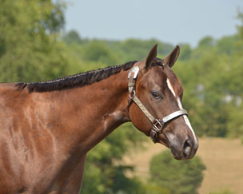
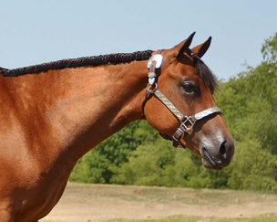
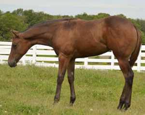
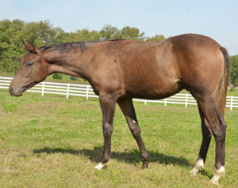

2011 Foals
2013 Foals | 2012 Foals | 2011 Foals | 2010 Foals

SOLD
If Onley ~ 2011 Filly
SIRE: Invitation Only DAM: Romantic Gesture
Superior Producing mare and top 5 Green Working Hunter in the Nation.
Congratulations to Missy Thyfault.
SOLD
LOPIN SOMEBODY ~ 2011 FILLY
SIRE: Lazy Loper DAM: Awesome Abrey by Barpassers Image
Dam is an AQHA point earning daughter of Barpassers Image out of a multiple Superior Western Pleasure earner with 254 points. Dam of "Do Ya Like My Lope" Reserve Champion Hylton Novice Horse class at The Little Futurity and multiple class winner.

SOLD
JUST A FRECKLE LAZY ~ 2011 FILLY
SIRE: Lazy Loper DAM: Investment A Ward by Zippo A Ward
Full sister to Bein A Little Lazy NSBA Breeders Championship Futurity 2 YO Non Pro Int & Ltd Western Pleasure Champion. Dam is a Futurity Champion, AQHA point earner and NSBA money earner. Congratulations to Rusty & Katie Green
SOLD
DONTCHA KNOW IM LAZY ~ 2011 COLT
SIRE: Lazy Loper DAM: Kissed N Zipped by Zippo Pine Chex
Out of Kissed N Zipped Congress Top Ten and half sister to Kiss Onthe Openrange Southern Belle $200,000 Slot Class winner.
LOPIN MY SASS OFF ~ 2011 FILLY
SIRE: Lazy Loper DAM: Skys Sassy Rose by Sky Blue Walker
Dam is an AQHA World Show Top Five, Congress Top Five and AQHA High Point Top Five.
>
SOLD
FINALLY GOT INVITD ~ 2011 FILLY
SIRE: Invitation Only DAM: My Invested Machine by A Good Machine
Out of a Reichert Celebration Champion and Open/Amateur Performance ROM earner. Congratulations to Rhonda Malone
SOLD
WILLY GOIN SLOW ~ 2011 COLT
SIRE: Winnies Willy DAM: Chipalua by Zips Chocolate Chip
Half brother to AQHA High Point Champion, Congress Top Tens, multiple Superior earners, Youth Performance Champion and out of a full sister to Reserve World Champion.
Congratulations to Debbie Williams


SOLD
LOPIN FOR THE DOUGH ~ 2011 COLT
SIRE: Lazy Loper DAM: Zippity Good Bar by Zippos Mr Good Bar
Half brother to Only Because Im Good NSBA Reserve World Champion, Congress Top Ten and Reichert Celebration Top Ten; Innovations Good Bar Regional Experience Champion and multiple ROMs. Congrats to Jim & Lisa Farrell.


SOLD
PLEASED TO BE INVITD ~ 2011 FILLY
SIRE: Invitation Only DAM: Vested Peaches by Vested Pine
Out of a Superior Western pleasure earner and full sister to Britney Pine World Champion, Two Time Reserve World Champion and Congress Champion. Congratulations to Kevin & Amy Smith.

SOLD
THE ULTIMATE OF LAZY ~ 2011 COLT
SIRE: Lazy Loper DAM: Ultra Investment by The Big Investment
Full brother to Ultra Lazy multiple Reserve Champion Reichert Celebration Half brother to Reserve World Champion, Congress Champion and multiple Superior earners. Congratulations to Elaine Rownd on her purchase of this fancy colt.
SOLD
NOW THATS LAZY ~ 2011 COLT
SIRE: Lazy Loper DAM: Blazing Hot Star by Blazing Hot
Out of AQHA Champion producer and Superior Producing daughter of Blazing Hot.

CHEXME OUT WILLY GUD ~ 2011 FILLY
SIRE: Winnies Willy DAM: Chex Are Good by Zippo Pine Chex
Half sister to Chex Out My Lope Southern Belle Invitation Futurity Champion and Tom Powers Futurity Top Five.

SOLD
PERMANANT PRESS ~ 2011 FILLY
SIRE: These Irons Are Hot DAM: Rivita by Encoriva
Out of a World Show Qualifier and Performance ROM earner.
;
SOLD
WILLY GOT THE FLO ~ 2011 FILLY
SIRE: Winnies Willy DAM: Winken Flo Joe by Winken Wayne
Dam is the earner of 204 points, Superior Western Pleasure
OVERDUE TO BE INVITD ~ 2011 COLT
SIRE: Invitation Only DAM: She Due Good by Zippos Mr Good Bar
Out of a Congress Champion, Reserve Congress Champion and producer of Congress Champion WereTalkinRadical


SOLD
THX FOR INVITN ME ~ 2011 COLT
SIRE: Invitation Only DAM: Goodbars Glamourgirl by Zippos Mr Good Bar
Half brother to Cool Assets World Champion and Reserve World Champion, multiple Congress Champion, Reserve Congress Champion and High Point Champion.

SOLD
ONLY INVITD AT NIGHT ~ 2011 FILLY
SIRE: Invitation Only DAM: RL Night Thing by Continental Hobo
Dam is the producer of a bronze trophy winner. Congratulations to Kevin & Amy Smith

SOLD
WILLY GOOD INVESTMNT ~ 2011 COLT
SIRE: Winnies Willy DAM: Investment A Ward by Zippo Award
Half brother to Bein A Little Lazy NSBA Breeders Championship Futurity 2 YO Non Pro Int & Ltd Western Pleasure Champion
;
SOLD
LOPIN GOOD N LAZY ~ 2011 FILLY
SIRE: Lazy Loper DAM: Chex Are Good by Zippo Pine Chex
Full sister to Chex Out My Lope Southern Belle Invitation Futurity Champion and Tom Powers Futurity Top Five. Congratulations to Vic Brennaman.


SOLD
OMG HES LAZY ~ 2011 COLT
SIRE: Lazy Loper DAM: Almost Good by Zippos Mr Good Bar
Dam is out of Ms RD Booty, AQHA Reserve World Champion and earner of 388 points.

SOLD Congrats to Gail Torsell
ARENT YOU INVITED ~ 2011 FILLY
SIRE: Invitation Only DAM: Flowers Ms Ivy by Sir Bar Flower
Dam is a Reichert Celebration Champion, Open and Amateur Superior Western Pleasure earner with 220 points.

SOLD Congratulations to Julie & David Ehler
DOWNRIGHT LAZY ~ 2011 COLT
SIRE: Lazy Loper DAM: Investment A Ward by Zippo A Ward
Full brother to Bein A Little Lazy NSBA Breeders Championship Futurity 2 YO Non Pro Int & Ltd Western Pleasure Champion. Dam is a Futurity Champion, AQHA point earner and NSBA money earner.


SOLD
INVITD FOR ROMANCE ~ 2011 FILLY
SIRE: Invitation Only DAM: A Bit of Romance by Coosa Lad
Dam is daughter of Majestic Romance, earner of Open and Amateur Superiors and over 300 points.

SOLD CONGRATULATIONS TO BETTY ANNE VIVIAN
ONLY ROGER ~ 2011 COLT
SIRE: Invitation Only DAM: Deducted (tb)


SOLD
YOUR LUCKY IM LAZY ~ 2011 COLT
SIRE: Lazy Loper DAM: KT Lucky Breeze (APHA)
Congratulations to Birgit Bayer-Sassenhausen, Willich, Germany